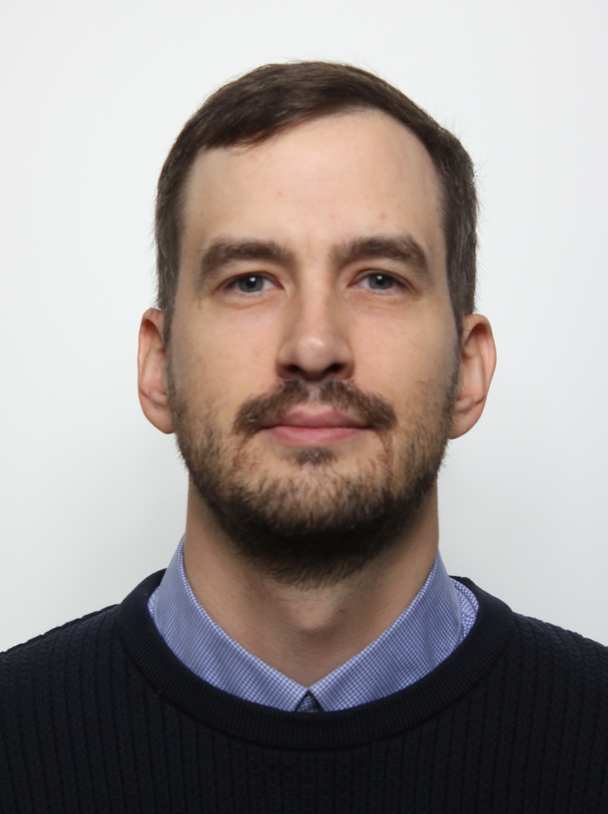

Stanislavs Ostrovskis

Summary
I am a highly knowledgeable and dedicated doctor with over 10 years of experience in providing quality healthcare
Education
- Family medicine resident - University of Latvia (2022 - Present )
- Medical doctor - Riga Stradins University (2005-2012)
Work Experience
Skills
- Patient-Centered Communication ⭐️⭐️⭐️⭐️⭐️
- Team Collaboration ⭐️⭐️⭐️⭐️
- Time management ⭐️⭐️⭐️⭐️
Other